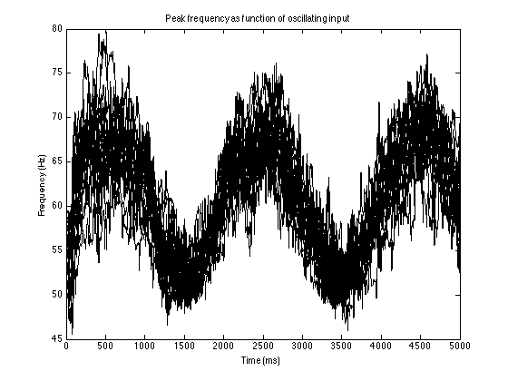
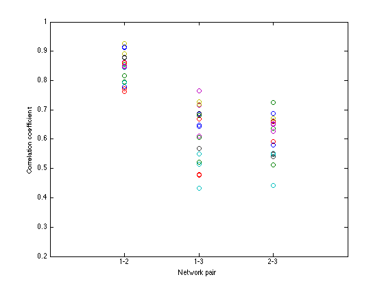
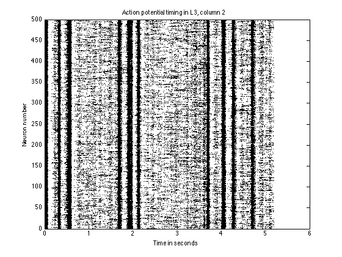
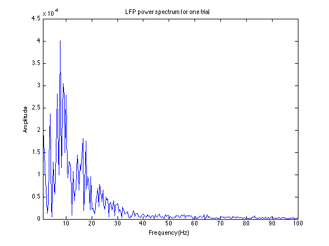

Readme file for: Cohen, MX (2014). Fluctuations in oscillation frequency control spike timing and coordinate neural networks. Journal of Neuroscience. These files were contributed by Mike X Cohen. Matlab files (*.m) are for Figure 2. They are cross-platform and do not require any toolboxes. The neuron equations are based on Izhikevich 2003. Additional comments can be found in the .m files. The code for Fig. 2c is izh_freqslide_timevaryinginput.m and generates:  Running the Fig. 2e code, izh_freqslide_timevaryinginput3networks.m, generates a figure like  Python files (*.py) are for Figure 3. The scripts require the Brian toolbox (Goodman and Brette, 2008) in Python 2.7. (Running the scripts in a different version of Python or Brian may require some re-programming.) The script will produce a .mat file that can be imported into Matlab. Additional comments can be found in the files adex_*.py. An example run of the network in a linux shell prompt: $ python adex_network2column_sineinput.py 20140602_1650.mat then analyzed at the matlab command prompt: >> load 20140602_1650.mat >> adex_static_basic_analysis makes graphs of the network activity:  and power spectrum that includes the region in Figure 3A:  however as the matlab figure is just one example its a lot more noisy because figure 3A contains the results averaged over 100 runs.